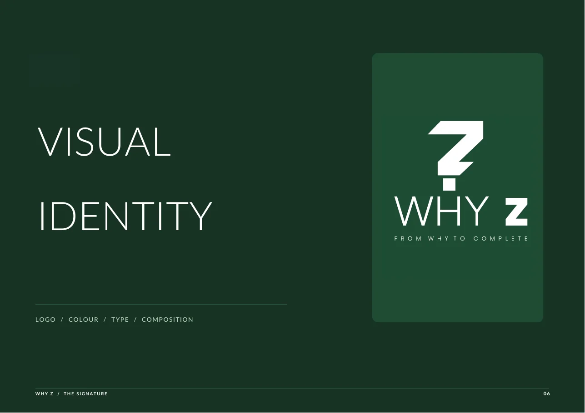
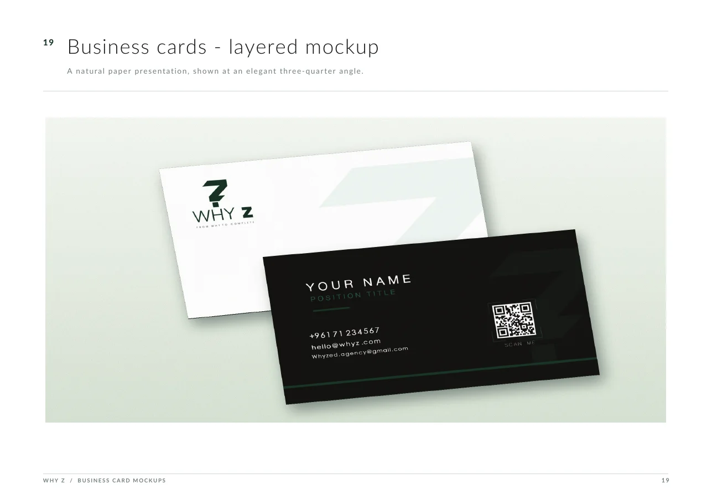
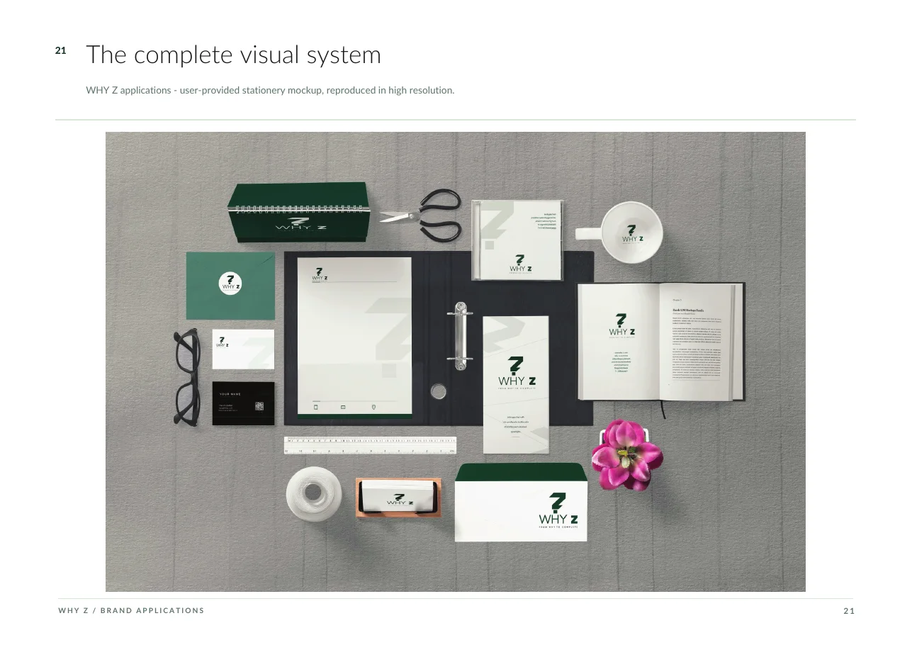

Creative & Production
Brand identity, logos, social media design and motion. This is the page you are on.
Based in Syria, working with clients across the Arab world. I turn a brief into an identity people recognise and remember.
I also research security vulnerabilities. See my technical work →Brand identity, logos, social media design and motion. This is the page you are on.
Full-stack web applications, workflow automation, security analysis and vulnerability research, backed by public recognition.
Three projects that show how I work, from a brand's visual identity to the posts it publishes.
Arabic calligraphic logo and campaign artwork for a Saudi brand, with a deep green and gold palette carried from the logo into the imagery.



Identity for WHY Z, a creative marketing agency: a question mark that resolves into a Z, a deep green palette, a type system, and applications from business cards to stationery.
A campaign post for a taxi brand, built on its yellow and black identity: a bold headline, a road-sign metaphor for the months ahead, and the logo applied to the vehicle.
Logos, colour and type systems, and the applications that make a brand recognisable.
Animated identities, titles and short-form motion built to hold attention.
Posts, stories and campaign systems that stay consistent across every channel.
Direct video testimonials from clients I have built custom platforms for and supported with high-stakes digital security and incident recovery.
Built a comprehensive custom website showcasing subscription packages, student results, and personal services. In this video, he speaks about our collaboration, commends the technical delivery, and directs anyone with technical inquiries or project needs to reach out to me.
Provided critical digital defense assistance to combat online extortion, defamation, and digital harassment. When asked publicly on Instagram for a trusted expert to help recover a lost account and address security threats, he personally recommended me as the strongest specialist in the field.
Request a course in the field you want to learn. I research the career paths and build a practical, step-by-step study plan around your goals. Courses and consultations are available in Arabic.
Get a focused review of the field, its market, salary ranges, career paths and job titles. Market information is supported by dated sources included in the research file.
Receive a study-plan file that orders the learning stages, explains each one, and links to relevant courses and lessons for every stage and topic.
When the field requires hands-on work, get a separate practice plan with sequenced projects, tasks and resources for each stage.
I have trained more than 100 learners across different fields. This includes career-readiness support that has helped learners secure their first jobs, as well as focused preparation for certification exams including OSCP, CompTIA Security+, CISSP and BTL1.
Explore course files, study roadmaps, practice plans and career research I prepared for learners across cybersecurity, data, databases and related fields. These materials document the training and guidance work behind this section.
Not sure where to start? I offer a free initial consultation to help you choose a direction and plan your next steps.
Request a free consultationWe talk through goals, audience and constraints.
Direction, references and a first visual route.
Design, edit and motion, produced and refined.
Final files in every format you need.
Published research and industry data, not client claims. Each figure links to its source.
The time it takes people to form a lasting judgment of a page's visual appeal.
Nature, 2006: Lindgaard et al.Revenue growth that surveyed marketers attribute to presenting a brand consistently. A survey estimate, not a guarantee.
Lucidpress, via Contently (2021)Of consumers say they want to see more video from the brands they follow.
Wyzowl State of Video Marketing 2026Social media user identities in Saudi Arabia in October 2025, equal to 111% of the population (accounts, not unique people).
DataReportal, Digital 2026: Saudi ArabiaI'm Khalil Khalil, a designer and visual storyteller based in Syria, working with clients across the Arab world and beyond. I work fluently in English and Arabic, so the work feels native in both.
I am a law graduate from Hawash Private University (HPU) in Syria, and I am currently studying Computer Science at University of the People (UoPeople). I also research security vulnerabilities, which shapes how I plan, structure and deliver every project. That work lives on its own page.
Design, brand identity and content. A separate technical CV is on the technical page.
Have a project in mind, want to collaborate, or want to talk creative/security ideas? I work remotely across Syria, the Gulf, the wider Arab world, and internationally.
khalilmkhalil0937@gmail.com